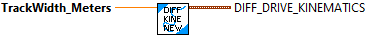

Constructs a differential drive kinematics data structure.
Helper class that converts a chassis velocity (dx and dtheta components) to left and right wheel velocities for a differential drive.
Inverse kinematics converts a desired chassis speed into left and right velocity components whereas forward kinematics converts left and right component velocities into a linear and angular chassis speed.
Parameters:
- TrackWidthMeters - The track width of the drivetrain. Theoretically, this is the distance between the left wheels and right wheels. However, the empirical value may be larger than the physical measured value due to scrubbing effects.
Returns:
- Diff Drive Kinematics -- Data structure for Differential Drive Kinematics
Returns a chassis speed from left and right component velocities using forward kinematics.
Parameters:
- in Diff Drive Kinematics -- This Differential Drive Kinematics data structure
- LeftVelocity - The left wheel speed (meters/sec).
- RightVelocity - The right wheel speed (meters/sec)
Returns:
- Chassis Speed - The chassis speed data structure

Returns left and right component velocities from a chassis speed using inverse kinematics.
Parameters:
- DiffDriveKinematics - This differential drive kinematics data structure
- chassisSpeeds - The linear and angular (dx and dtheta) components that represent the chassis' speed.
Returns:
- LeftVelocity - Left wheel velocity (meters/sec )
- RightVelocity - Right wheel velocity (meters/sec)